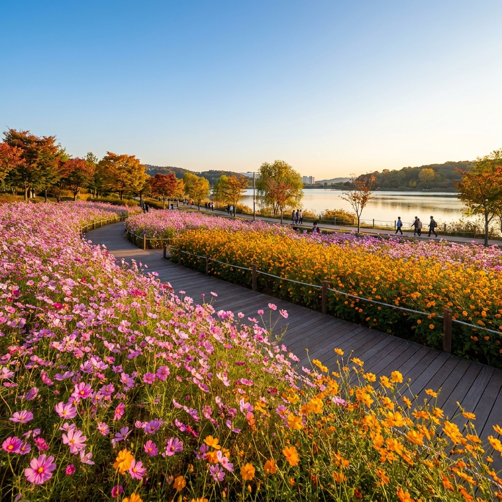
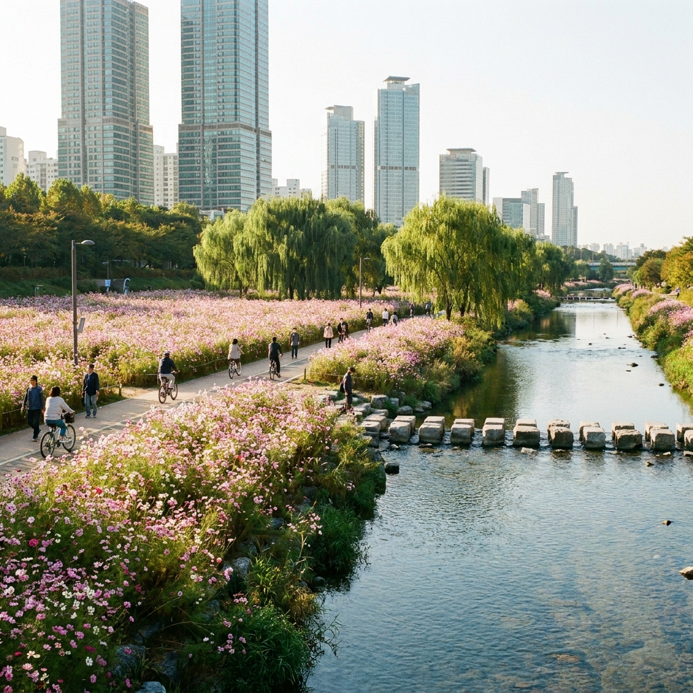
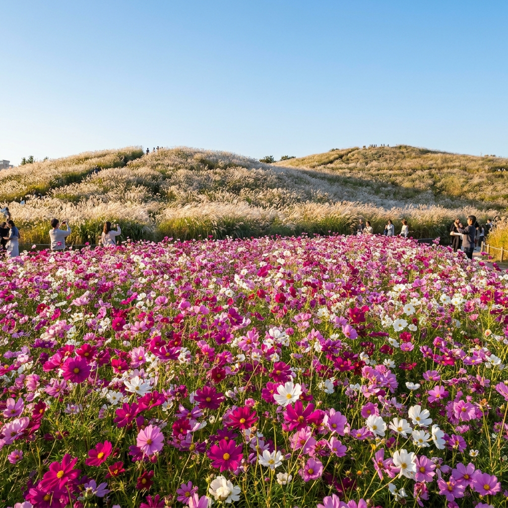

수도권 코스모스 명소 비교 — 의왕 왕송호수·서울 양재천·상암 월드컵공원 개화 시기와 대중교통 주차비 비교표
가을의 문턱인 9월 말부터 10월 초는 선선한 바람과 함께 분홍빛·황금빛 코스모스가 만개하는 최적의 나들이 시즌입니다. 수도권에서 멀리 떠나지 않고도 대중교통이나 자가용으로 가볍게 다녀올 수 있는 대표 명소로는 의왕 왕송호수, 서울 도심의 양재천, 그리고 마포 상암 월드컵공원이 손꼽힙니다.
세 명소는 개화 양상부터 주차 난이도, 연계 액티비티까지 뚜렷한 차이를 보입니다. 오늘 포스팅에서는 각 명소별 2026년 최신 개화 현황, 시간대별 주차 요금 비교표, 대중교통 최적 이동 경로, 그리고 가을 인생샷을 남길 수 있는 산책 동선 체크리스트를 상세히 안내해 드립니다.

의왕 왕송호수 수변을 따라 황화코스모스와 핑크 코스모스가 만개한 가을 정취 / AI 제작 이미지
01 | 2026 수도권 코스모스 개화 현황과 최적 방문 시기
수도권의 코스모스는 보통 9월 중순부터 꽃망울을 터뜨리기 시작해 9월 하순부터 10월 초순 사이에 절정을 이룹니다. 특히 2026년 가을은 9월 중순 이후 적당한 일조량과 서늘한 아침저녁 기온이 이어지면서 꽃의 색감이 한층 짙고 선명하게 형성되었습니다.
일반적으로 분홍색·자주색·흰색이 섞인 일반 코스모스뿐만 아니라, 주황빛과 노란빛을 띠는 황화코스모스가 함께 식재되는 구역이 많아 방문 시기에 따라 다채로운 풍경을 감상할 수 있습니다. 9월 마지막 주말부터 10월 둘째 주말까지가 가장 풍성한 만개 상태를 보여주는 골든타임입니다.
코스모스는 개화 기간이 약 2~3주 정도로 비교적 긴 편이지만, 가을철 강한 비바람이 지나가면 줄기가 쓰러지기 쉽습니다. 따라서 비 예보가 없는 맑은 평일 오전이나 주말 이른 아침에 방문하시는 것이 가장 싱싱한 꽃밭을 만끽하는 비결입니다.
02 | 수도권 3대 코스모스 명소 한눈에 보는 비교표
나들이를 계획할 때 장소 선정의 핵심은 접근성, 주차 편의성, 그리고 꽃밭의 규모입니다. 세 명소의 핵심 지표를 비교한 아래 표를 확인하시고 본인의 일정과 이동 수단에 맞는 최적의 장소를 선택해 보세요.
| 구분 |
의왕 왕송호수 |
서울 양재천 |
상암 월드컵공원 |
| 주요 꽃 품종 |
일반 코스모스 + 황화코스모스 |
분홍 코스모스 + 수변 들꽃 |
코스모스 + 핑크뮬리 + 억새 |
| 개화 절정기 |
9월 하순 ~ 10월 중순 |
9월 말 ~ 10월 초순 |
10월 초순 ~ 10월 중순 |
| 입장료 |
무료 (체험시설 별도) |
무료 |
무료 |
| 주차 요금 |
1시간 1,000원 / 종일 5,000원 |
노상·인근 공영 1시간 약 2,400~3,000원 |
10분당 300원 (1시간 1,800원) |
| 대중교통 |
1호선 의왕역 도보 15~20분 (버스 5분) |
3호선·신분당선 양재시민의숲역 도보 5분 |
6호선 월드컵경기장역 도보 10분 |
| 추천 대상 |
가족 단위, 레일바이크 연계 나들이 |
도심 직장인, 가벼운 데이트 산책 |
인생샷 촬영, 하늘공원 억새 연계 코스 |
💡 명소 선택 가이드: 어린이나 어르신과 함께 여유로운 당일치기 피크닉을 즐기려면 의왕 왕송호수가 좋고, 지하철을 타고 부담 없이 도심 수변을 걷고 싶다면 양재천이 적합합니다. 가을 억새와 코스모스를 한 번에 둘러보며 다채로운 사진을 남기고 싶다면 상암 월드컵공원을 추천합니다.
03 | 의왕 왕송호수 코스모스길과 레일바이크 둘레길 동선
의왕 왕송호수는 약 4.3km의 둘레길을 갖춘 대규모 친수공원입니다. 매년 가을이면 호수 수변 생태공원과 레일바이크 철길 주변으로 수만 평 규모의 코스모스 군락이 황금빛과 분홍빛 물결을 이룹니다.
코스모스를 가장 알차게 관람하는 추천 동선은 레솔레파크 잔디광장에서 출발하여 왕송호수 습지데크를 거쳐 레일바이크 중간 정차장 방면으로 걸어가는 코스입니다. 이 구간은 평탄한 목재 데크로 조성되어 있어 유모차나 휠체어를 동반한 가족 탐방객도 편안하게 산책할 수 있습니다.
특히 호수를 한 바퀴 순환하는 의왕스카이레일과 레일바이크를 탑승하면 철길 양옆으로 스쳐 지나가는 코스모스 꽃길을 색다른 각도에서 조망할 수 있습니다. 맑은 날에는 호수 표면에 푸른 가을 하늘과 오색 꽃밭이 그대로 반영되어 감탄을 자아냅니다.
04 | 왕송호수 대중교통 가는 법과 공영주차장 요금 팁
의왕 왕송호수는 수도권 전철 1호선 의왕역과 매우 인접해 있어 대중교통 접근성이 뛰어납니다. 의왕역 2번 출구로 나와 도보로 약 15~20분 정도 이동하거나, 역 앞 정류장에서 마을버스(01번, 05번)를 탑승하면 5분 만에 자연학습공원 정류장에 도착합니다.
자가용을 이용하실 경우, 주차는 레솔레파크 공영주차장 또는 왕송호수 공영주차장을 이용하시면 됩니다. 주차 요금은 최초 1시간까지 1,000원, 1시간 초과 시 30분당 500원이 부과되며, 1일 주차 요금은 5,000원으로 매우 저렴합니다.
주말 낮 12시부터 오후 3시 사이에는 만차가 발생하기 쉬우므로, 오전 10시 30분 이전에 입차하시거나 조류생태과학관 방면의 보조 주차장을 활용하시는 것을 권장합니다.

서울 도심 속 양재천 산책로를 따라 흐드러지게 핀 핑크 코스모스 길 / AI 제작 이미지
05 | 서울 양재천 코스모스 군락지 포인트와 도심 힐링 산책로
서울 도심에서 가장 쉽게 계절의 변화를 느낄 수 있는 양재천은 가을마다 서초구와 강남구 일대 수변 산책로를 따라 대규모 코스모스길을 조성합니다. 특히 양재시민의숲 인근 영동1교부터 영동4교 사이 구간이 코스모스 밀도가 가장 높은 핵심 포인트입니다.
양재천 코스모스길의 매력은 맑은 하천과 물고기, 수변 갈대가 분홍빛 코스모스와 자연스럽게 어우러진다는 점입니다. 하천 양안으로 보행자 전용 도로와 자전거 도로가 철저히 분리되어 있어 아이들과 함께 걷기에도 매우 안전합니다.
물길 중간마다 놓인 징검다리는 최고의 포토존입니다. 징검다리 중간에 서서 양재천 양옆으로 펼쳐진 코스모스 군락을 배경으로 사진을 찍으면 도심 한가운데라고는 믿기지 않을 만큼 서정적이고 감성적인 결과물을 얻을 수 있습니다.
06 | 양재천 자전거 도로·징검다리 포토존과 주차 팁
양재천을 방문할 때는 신분당선 및 3호선 양재시민의숲역(매헌역) 1번 또는 2번 출구를 이용하는 것이 가장 편리합니다. 출구에서 나와 양재천 방면으로 5분만 걸어가면 바로 수변 산책로 진입 계단이 나타납니다.
자가용 이용객은 매헌시민의숲 공영주차장(동측/서측)을 이용할 수 있으며, 요금은 10분당 500원(1시간 3,000원) 수준입니다. 주말에는 공영주차장이 조기에 혼잡해지므로 대중교통 이용이 훨씬 유리합니다.
만약 따릉이나 개인 자전거를 이용해 한강 합수부에서 양재천 상류 방면으로 라이딩을 즐기신다면, 자전거 도로를 따라 시원한 가을바람을 맞으며 코스모스 꽃물결을 감상하는 코스를 강력히 추천합니다.

상암 월드컵공원의 만개한 코스모스와 하늘공원 억새 능선의 조화 / AI 제작 이미지
07 | 상암 월드컵공원 평화의공원 코스모스와 하늘공원 연계
서울 서부권을 대표하는 마포구 상암 월드컵공원은 평화의공원, 난지천공원, 하늘공원, 노을공원으로 이루어진 거대한 생태 휴식 공간입니다. 그중에서도 평화의공원 유니세프광장 주변과 모험놀이터 인근 들판에는 가을마다 풍성한 코스모스 단지가 조성됩니다.
상암 월드컵공원의 최대 장점은 코스모스뿐만 아니라 억새 축제로 유명한 하늘공원과 도보로 바로 연결된다는 점입니다. 평화의공원에서 호수와 코스모스를 둘러본 후, 구름다리를 건너 하늘공원 계단을 오르거나 맹꽁이 전기차를 타면 은빛 억새와 핑크뮬리까지 반나절 만에 모두 섭렵할 수 있습니다.
평화의공원 난지연못 주변 잔디밭은 텐트 설치는 불가하지만 돗자리 피크닉이 자유롭게 허용되어 있어, 가을 소풍 도시락을 준비해 온 가족과 연인들로 활기가 넘칩니다.
08 | 월드컵경기장역 접근성과 주차장별 요금 비교
상암 월드컵공원은 서울 지하철 6호선 월드컵경기장역 1번 출구로 나오면 대형 마트와 에스컬레이터를 거쳐 평화의공원 정문까지 도보 5~7분이면 도착합니다. 대중교통 인프라가 서울 시내 공원 중 가장 우수한 편입니다.
차량을 가져오실 경우 평화의공원 주차장(약 1,160대 수용 가능)을 이용하는 것이 가장 가깝습니다. 주차 요금은 10분당 300원(1시간 1,800원)이며, 승용차 요일제 및 경차, 다자녀 감면 혜택이 적용됩니다.
단, 서울월드컵경기장에서 프로축구 경기나 대형 콘서트가 열리는 날에는 주차장이 극심하게 혼잡해지고 경기 관람객 정액 요금이 적용될 수 있으므로, 방문 당일 경기장 행사 일정을 사전 확인하시기 바랍니다.
09 | 가을 꽃놀이 나들이 준비물과 촬영 시간대 체크리스트
야외 코스모스 꽃밭에서 만족스러운 사진을 남기고 쾌적한 나들이를 즐기기 위해 사전에 챙겨야 할 필수 체크리스트를 정리해 드립니다.
📸 코스모스 인생샷 촬영 골든타임
- 오전 08:30 ~ 10:30: 사광이 부드럽게 비치고 꽃잎에 아침 이슬이 남아 있어 생동감이 넘치며, 방문객이 적어 한적한 독사진 촬영 가능.
- 오후 16:30 ~ 17:40: 노을 직전의 따뜻한 역광(골든아워)이 꽃잎을 투과하여 몽환적이고 감성적인 분위기 연출 가능.
🎒 가을 나들이 필수 소지품 체크리스트
- 자외선 차단용품: 가을철 햇살은 각도가 낮아 눈부심이 심하므로 양산, 모자, 선글라스 필수 지참.
- 휴대용 돗자리 & 물티슈: 수변 벤치가 부족할 때 잔디밭에서 휴식을 취하기 위한 필수품.
- 밝은 계열 옷차림: 코스모스의 분홍·주황빛과 대비되는 화이트, 아이보리, 연청 계열의 의상이 사진에 가장 화사하게 담깁니다.
- 수분 보충용 생수: 넓은 공원 둘레길을 1시간 이상 걷게 되므로 가벼운 텀블러나 생수를 챙기세요.
수도권의 아름다운 3대 코스모스 명소에서 사랑하는 가족, 연인과 함께 향긋한 가을의 정취를 만끽하시기 바랍니다.
#수도권코스모스
#의왕왕송호수
#양재천코스모스
#상암월드컵공원
#가을나들이
#코스모스명소
#주차요금비교
#가을당일치기
#서울근교산책
#인생샷명소